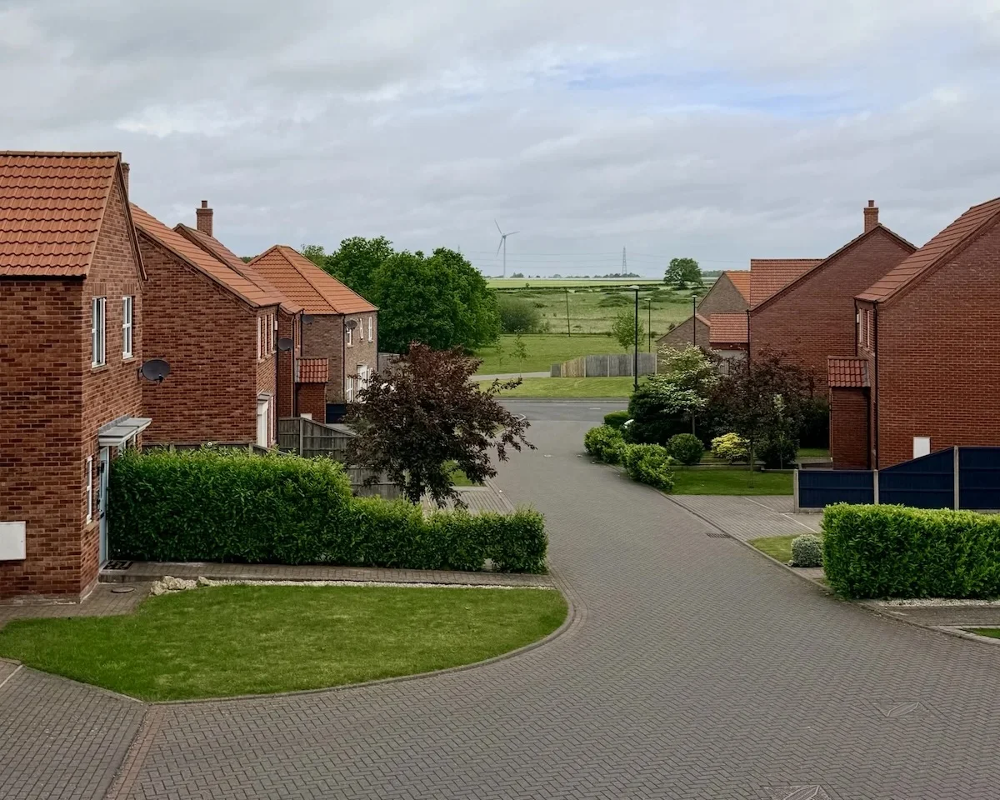

About
This street view illustration is based on a photo taken from my house. The scene is dynamically composed from multiple different layers.
A base layer is combined with sky, objects, weather, and effect overlays, allowing for different weather states to be rendered.
I used an LLM to create the base illustration, all layer assets, and to build the entire project.
The idea for this project was based on Dunstan Orchard's incredible panorama.
Original Photo
